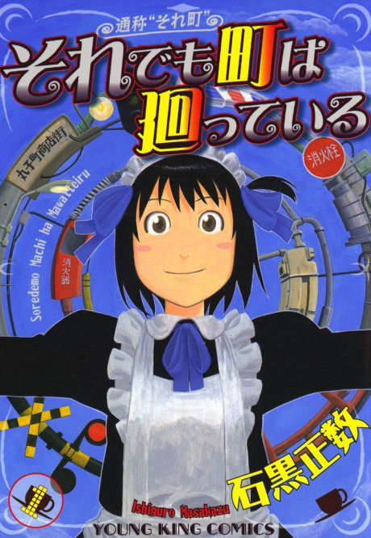
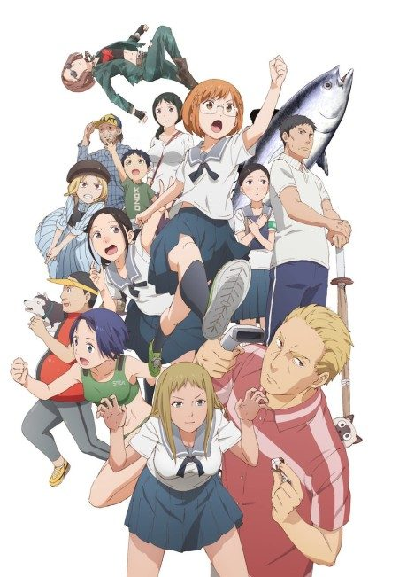
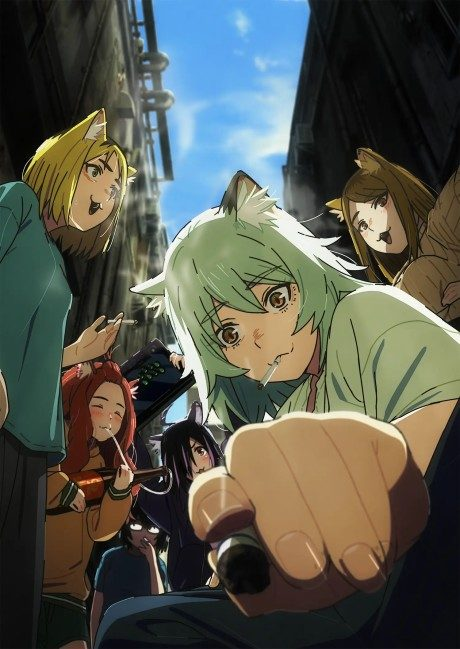

And Yet The Town Moves
それでも町は廻っている
Hotori is a cheerful airhead who works at a maid café in a shopping street, where her everyday life turns into one small odd adventure after another.
After the anime, read the manga from Chapter 1.
7.4AniList score
—Animeter, no votes yet
12episodes
Rate it or report where you stopped
Anime finished. Where does the manga pick up?
Start at Chapter1
The anime adapts about 22 chapters out of order with no single end point; start the manga at chapter 1.
More like And Yet The Town Moves
 Manga Ch. 717.9
Manga Ch. 717.9
 Unclear8.0
Unclear8.0

Unclear7.2 Manga Vol. 78.3
Manga Vol. 78.3
 Manga Ch. 487.8
Manga Ch. 487.8
 Manga Ch. 626.7
Manga Ch. 626.7
 Manga Ch. 228.7
Manga Ch. 228.7

Unclear7.1 Manga Ch. 357.2
Manga Ch. 357.2
 Done8.1
Done8.1
Manga Ch. 406.7
My Deer Friend Nokotan Unclear7.9
Unclear7.9